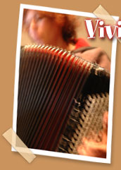

|  | |||
| She
was born in a free county (Franche Comté!) in sweet Doubs, a perfect
environment for the fulfillment of her talent. At age 4, she and her accordion
began to cavort to the rhythms of world musics, waltz and swing, rock
and jazz. |
|||
| •
CDs and tours with Hugues Aufray (5 albums), Ray Lema, Baba Djan, Kekele,
Thomas Pitiot (2), Céline Caussimon (2), L'Attirail (2), Abed Azrié
(2). Tours with I Muvrini, Sam Mangwana, Manau, Omar Pene, Corinne... • Recordings with So Kalmery, Nana Mouskouri, Patrice Leconte, Jannick Top, Bushman, Georgian Legend, Limborg (3), Yves Saint-Laurent, Mama Kaya (2), Thomasi... • Compositions for short movies, dance shows and songs. |
|||
|
|
|||